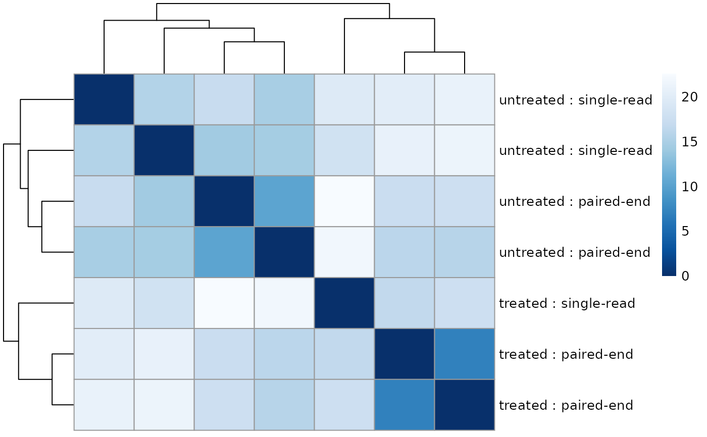

This function generates a HTML report with exploratory data analysis plots
for DESeq2 results created with DESeq. Other output formats
are possible such as PDF but lose the interactivity. Users can easily append
to the report by providing a R Markdown file to customCode, or can
customize the entire template by providing an R Markdown file to
template.
DESeq2Report( dds, project = "", intgroup, colors = NULL, res = NULL, nBest = 500, nBestFeatures = 20, customCode = NULL, outdir = "DESeq2Exploration", output = "DESeq2Exploration", browse = interactive(), device = "png", template = NULL, searchURL = "http://www.ncbi.nlm.nih.gov/gene/?term=", theme = NULL, digits = 2, ... )
| dds | A DESeqDataSet object with the results from running DESeq. |
|---|---|
| project | The title of the project. |
| intgroup | interesting groups: a character vector of names in
|
| colors | vector of colors used in heatmap. If |
| res | A DESeqResults object. If |
| nBest | The number of features to include in the interactive table. Features are ordered by their adjusted p-values. |
| nBestFeatures | The number of best features to make plots of their counts. We recommend a small number, say 20. |
| customCode | An absolute path to a child R Markdown file with code to be evaluated before the reproducibility section. Its useful for users who want to customize the report by adding conclusions derived from the data and/or further quality checks and plots. |
| outdir | The name of output directory. |
| output | The name of output HTML file (without the html extension). |
| browse | If |
| device | The graphical device used when knitting. See more at
http://yihui.name/knitr/options ( |
| template | Template file to use for the report. If not provided, will use the default file found in DESeq2Exploration/DESeq2Exploration.Rmd within the package source. |
| searchURL | A url used for searching the name of the features in
the web. By default |
| theme | A ggplot2 theme to use for the plots made with ggplot2. |
| digits | The number of digits to round to in the interactive table of
the top |
| ... | Arguments passed to other methods and/or advanced arguments. Advanced arguments: The name of the package used for performing the
differential expression analysis. Either A DGEList object. The function call. Either Logical, whether to clean the results or not. Passed to render. |
An HTML report with a basic exploration for the given set of DESeq2 results.
Set output_format to 'knitrBootstrap::bootstrap_document' or
'pdf_document' if you want a HTML report styled by knitrBootstrap or
a PDF report respectively. If using knitrBootstrap, we recommend the version
available only via GitHub at https://github.com/jimhester/knitrBootstrap
which has nicer features than the current version available via CRAN. You can
also set the output_format to 'html_document' for a HTML
report styled by rmarkdown. The default is set to
'BiocStyle::html_document'.
If you modify the YAML front matter of template, you can use other
values for output_format.
The HTML report styled with knitrBootstrap can be smaller in size than the
'html_document' report.
#>#>#> #>#> #> #> #> #>#> #> #>#> #> #> #> #> #> #> #>#>#> #> #> #> #>#>#>#>#> #>library("DESeq2")#>#>#> #>#> #> #>#>#>#>#>#>#>#> #>#> #> #>#> #>#> #> #>#> #> #>#> #>#> #> #> #>## Create DESeqDataSet object from the pasilla package data("pasillaGenes") countData <- counts(pasillaGenes) colData <- pData(pasillaGenes)[, c("condition", "type")] dds <- DESeqDataSetFromMatrix( countData = countData, colData = colData, design = ~condition ) dds <- DESeq(dds)#>#>#>#> Warning: partial argument match of 'length' to 'length.out'#>#>#>## The output will be saved in the 'DESeq2Report-example' directory dir.create("DESeq2Report-example", showWarnings = FALSE, recursive = TRUE) ## Generate the HTML report report <- DESeq2Report(dds, "DESeq2-example", c("condition", "type"), outdir = "DESeq2Report-example" )#> Warning: partial argument match of 'length' to 'length.out'#> Warning: partial match of 'Date' to 'Date/Publication'#> Warning: partial match of 'Date' to 'Date/Publication'#> Warning: method is only applicable to ‘bibentry’ objects#>#> #>#> #> #>#> | | | 0% | |. | 2% #> inline R code fragments #>#> Warning: partial match of 'len' to 'lengths'#> Warning: partial match of 'len' to 'lengths'#> | |... | 4% #> label: docSetup (with options) #> List of 3 #> $ bootstrap.show.code : logi FALSE #> $ dev : symbol device #> $ bootstrap.show.message: logi FALSE #> #> | |.... | 6% #> ordinary text without R code #> #> | |...... | 9% #> label: setup (with options) #> List of 1 #> $ bootstrap.show.message: logi FALSE #> #> | |....... | 11% #> ordinary text without R code #> #> | |......... | 13% #> label: PCA#> | |.......... | 15% #> inline R code fragments #> #> | |............ | 17% #> label: sampleDist#> | |............. | 19% #> ordinary text without R code #> #> | |............... | 21% #> label: MAplotalpha#> | |................ | 23% #> inline R code fragments #> #> | |.................. | 26% #> label: MAplotalphaHalf#> | |................... | 28% #> inline R code fragments #> #> | |..................... | 30% #> label: MAplotalpha-nBest#> | |...................... | 32% #> inline R code fragments #> #> | |........................ | 34% #> label: pvalueHistogram#> | |......................... | 36% #> ordinary text without R code #> #> | |........................... | 38% #> label: pvalueSumm #> | |............................ | 40% #> ordinary text without R code #> #> | |.............................. | 43% #> label: pvalueTable (with options) #> List of 1 #> $ results: chr "asis" #> #> | |............................... | 45% #> ordinary text without R code #> #> | |................................. | 47% #> label: padjHistogram#> | |.................................. | 49% #> inline R code fragments #> #> | |.................................... | 51% #> label: padjSumm #> | |..................................... | 53% #> inline R code fragments #> #> | |....................................... | 55% #> label: padjTable (with options) #> List of 1 #> $ results: chr "asis" #> #> | |........................................ | 57% #> inline R code fragments #> #> | |.......................................... | 60% #> label: topFeatures (with options) #> List of 1 #> $ results: chr "asis" #> #> | |........................................... | 62% #> inline R code fragments #> #> | |............................................. | 64% #> label: plotCounts#> | |.............................................. | 66% #> inline R code fragments #> #> | |................................................ | 68% #> label: edgeR-BCV (with options) #> List of 2 #> $ eval: symbol isEdgeR #> $ echo: language isEdgeR & outputIsHTML #> #> | |................................................. | 70% #> inline R code fragments #> #> | |................................................... | 72% #> label: edgeR-MDS (with options) #> List of 2 #> $ eval: symbol isEdgeR #> $ echo: language isEdgeR & outputIsHTML #> #> | |.................................................... | 74% #> inline R code fragments #> #> | |...................................................... | 77% #> label: unnamed-chunk-1 (with options) #> List of 2 #> $ child: symbol customCode #> $ eval : symbol hasCustomCode #> #> | |....................................................... | 79% #> inline R code fragments #> #> | |......................................................... | 81% #> label: thecall (with options) #> List of 1 #> $ echo: logi FALSE #> #> | |.......................................................... | 83% #> ordinary text without R code #> #> | |............................................................ | 85% #> label: reproducibility1 (with options) #> List of 1 #> $ echo: logi FALSE #> #> | |............................................................. | 87% #> ordinary text without R code #> #> | |............................................................... | 89% #> label: reproducibility2 (with options) #> List of 1 #> $ echo: logi FALSE #> #> | |................................................................ | 91% #> ordinary text without R code #> #> | |.................................................................. | 94% #> label: reproducibility3 (with options) #> List of 1 #> $ echo: logi FALSE #> #> | |................................................................... | 96% #> inline R code fragments #>#> Warning: partial match of 'len' to 'lengths'#> Warning: partial match of 'len' to 'lengths'#> Warning: partial match of 'len' to 'lengths'#> Warning: partial match of 'len' to 'lengths'#> Warning: partial match of 'len' to 'lengths'#> Warning: partial match of 'len' to 'lengths'#> | |..................................................................... | 98% #> label: bibliography (with options) #> List of 3 #> $ results: chr "asis" #> $ echo : logi FALSE #> $ warning: logi FALSE #> #> | |......................................................................| 100% #> ordinary text without R code #> #>#>#> /Applications/RStudio.app/Contents/MacOS/pandoc/pandoc +RTS -K512m -RTS DESeq2Exploration.utf8.md --to html4 --from markdown+autolink_bare_uris+tex_math_single_backslash+smart --output DESeq2Exploration.html --email-obfuscation none --self-contained --wrap preserve --standalone --section-divs --table-of-contents --toc-depth 3 --variable toc_float=1 --variable toc_selectors=h1,h2,h3 --variable toc_collapsed=1 --variable toc_smooth_scroll=1 --variable toc_print=1 --template /var/folders/cx/n9s558kx6fb7jf5z_pgszgb80000gn/T//RtmpGxC45S/BiocStyle/template.html --no-highlight --variable highlightjs=1 --number-sections --css /Library/Frameworks/R.framework/Versions/4.0/Resources/library/BiocStyle/resources/html/bioconductor.css --variable 'theme:bootstrap' --include-in-header /var/folders/cx/n9s558kx6fb7jf5z_pgszgb80000gn/T//RtmpGxC45S/rmarkdown-stre62a127d352e.html --mathjax --variable 'mathjax-url:https://mathjax.rstudio.com/latest/MathJax.js?config=TeX-AMS-MML_HTMLorMML' --lua-filter /Library/Frameworks/R.framework/Versions/4.0/Resources/library/rmarkdown/rmd/lua/pagebreak.lua --lua-filter /Library/Frameworks/R.framework/Versions/4.0/Resources/library/rmarkdown/rmd/lua/latex-div.lua --variable code_folding=hide --variable code_menu=1#> #>if (interactive()) { ## Browse the report browseURL(report) } if (FALSE) { ## Note that you can run the example using: example("DESeq2Report", "regionReport", ask = FALSE) }